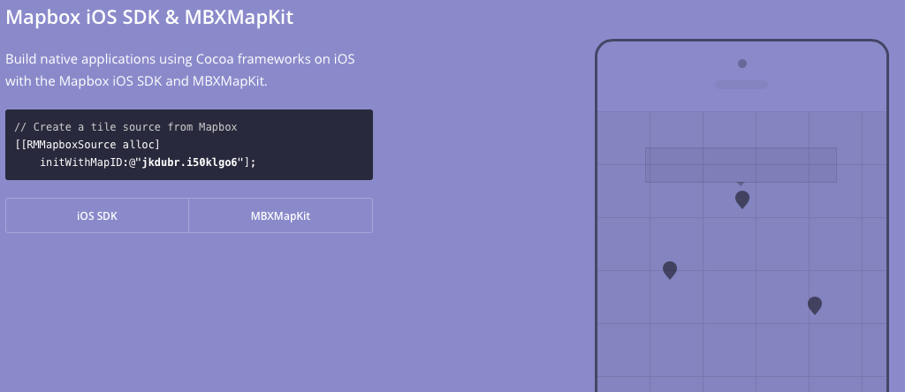
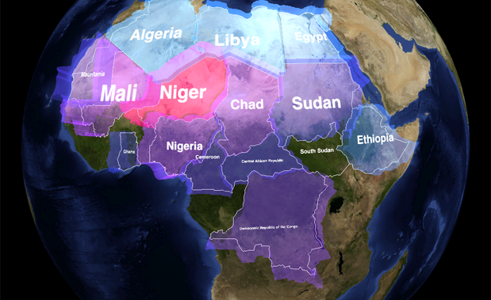
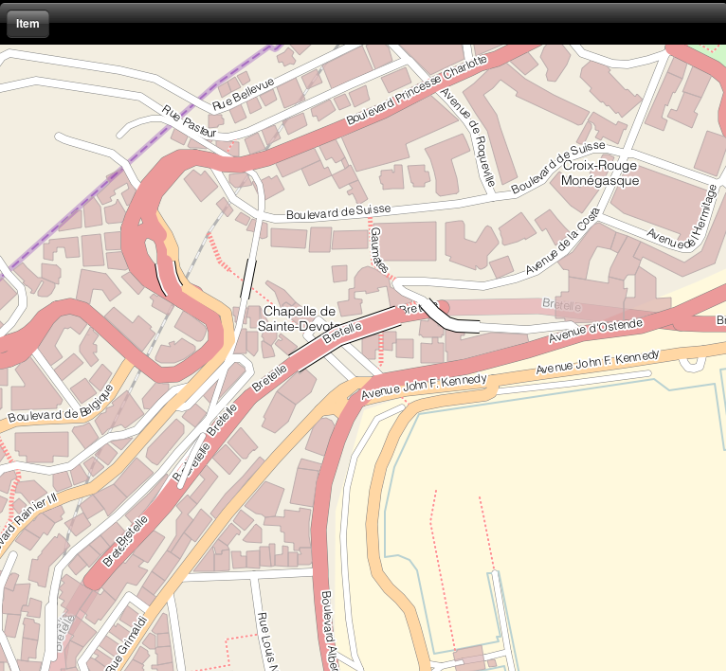

Help us to find OpenSource mobile GIS frameworks
https://www.mapbox.com/developers/#mobile @Mapbox
Build native applications using Cocoa frameworks on iOS with the Mapbox iOS SDK and MBXMapKit. An open source toolset for building mapping applications for iPhone and iPad devices with great flexibility for visual styling, offline use, and customizability.
http://www.nutiteq.com @Nutiteq
Nutiteq Maps SDK for smartphones enables offline mapping, 3D and GIS data, extendability and much more for the most advanced apps and professional solutions.
http://mousebird.github.io/WhirlyGlobe/
The WhirlyGlobe Component is a framework you can use to put an interactive 3D globe in your app. You can provide base imagery, including networked tile data sets, labels, vectors, shapes, or even overlay UIView's.
https://github.com/beelsebob/OpenStreetPad/
OpenStreetPad is an OpenStreetMap renderer based on MapCSS styles. In it's current state it is integrated into an application that shows a single OSPMapView.
https://github.com/medvedNick/Mapsforge_iOS
MapsforgeReader allows iOS applications to read compact .map files with vector maps. There is an example, which should be working without any settings.